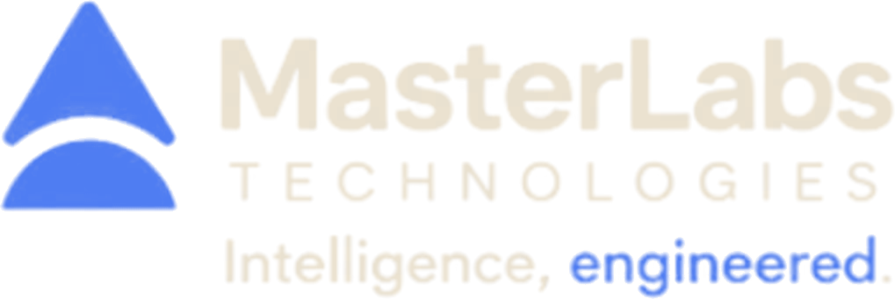

PROJE ÖNERİSİ · BOZDAĞ FİLM İÇİN1İÇ. BEYKOZ – YENİ BİR STÜDYO – GÜN1
OTAĞ
Bozdağ Film'in kendi dünyasını, kendi çatısı altında üreten yapay zekâ stüdyosu.
- HAZIRLAYAN
- MasterLabs
- KİME
- Bozdağ Film
- OKUMA
- 3 dk
- İSTENEN KARAR
- 1
2DIŞ. RİVA PLATOSU – ŞAFAK2
SİZDE OLAN
Araçlar herkeste var. Bu dünya yalnızca sizde.
Arşiv
Kuruluş: Osman'dan Destan'a, yılların kostümü, dekoru, ışığı.
Karakterler
Seyircinin tanıdığı yüzler.
Plato
Gerçek setler, tek çatı.
Bugün yapılabilen: çekimden önce sahneyi görmek, storyboard canlandırmak, diziler ve plato etkinlikleri için tanıtım filmleri, atmosferik kısa filmler.
Neden şimdi: yeni projelerin geliştirildiği dönem, çekimden önce sahneyi görmenin en çok işe yaradığı zamandır.
3İÇ. KURGU ODASI – GECE3
MASTERLABS'İN KURACAĞI SİSTEM
Bir motor, üstünde bir platform.
MasterLabs bu iki parçayı kurar, ekibinize teslim eder ve kullanmayı öğretir.
Motor görüntüyü üretir: arşivinizle eğitilmiş açık modeller, kendi donanımınızda. Platform ekibinizin kullandığı arayüzdür.
Tek tuş değil, bir zincir
- Senaryo
- Storyboard
- Anahtar kare
- Çekim
- Ses
- Kurgu
4İÇ. TOPLANTI ODASI – GÜN4
SEÇENEKLER
Bu iş üç yoldan yapılır.
Fark, görüntünün nerede üretildiğidir.
Kapalı bulut
Hazır servisler. Görüntü onların sunucusunda üretilir.
Kiralık GPU
Sizin modelleriniz, saatlik kiralanan donanımda.
Lokal
Sizin modelleriniz, sizin binanızda. Hiçbir şey dışarı çıkmaz.
| ÖLÇÜT | A · BULUT | B · KİRALIK | C · LOKAL |
|---|---|---|---|
| Görüntü kalitesi | En iyi | Orta-iyi | Orta-iyi |
| Diyalog, dudak senkronu | Hazır | Zayıf | Zayıf |
| İlk filme kadar süre | 1-2 hafta | 3-4 hafta | Donanım gelince |
| Başlangıç yatırımı | Yok | Yok | Yüksek |
| Kullandıkça maliyet | Artar | Artar | Elektrik, bakım |
| Arşivinizle eğitim | Sınırlı | Tam | Tam |
| Gerçek oyuncu yüzü | Engellenir | Serbest | Serbest |
| Savaş sahneleri | Sık reddedilir | Serbest | Serbest |
| Gizlilik | Dışarı çıkar | Kısmen | Tam |
| Dışa bağımlılık | Yüksek | Düşük | Yok |
Açık konuşalım: lokal ucuz olduğu için seçilmez. Kısa vadede bulut daha ucuzdur. Lokalin gerekçesi kontroldür.
5İÇ. ARŞİV ODASI – GÜN5
DEĞERLENDİRME
Lokali haklı çıkaran üç şey.
Oyuncu yüzleri
Bulut servisleri gerçek kişileri engeller. Burada karar sizin.
Savaş sahneleri
Tarihi aksiyon bulut filtrelerine takılır. Lokalde filtre yok.
Arşivle eğitim
Kostümünüz ve dekorunuz modele öğretilir, kalıcı varlığınız olur.
Konuşan karakterler ve en üst görüntü kalitesi.
Platform ikisini de çalıştırır. Her çekimde motoru siz seçersiniz.
6MONTAJ – BEŞ PERDE6
MASTERLABS'İN ÖNERDİĞİ PLAN
Küçük başlar, sonuç gördükçe büyür.
Sütun yüksekliği yatırımın göreli büyüklüğüdür. Büyük harcama, sonuç görüldükten sonra gelir.
- 0Keşif1 hafta
- 1İlk Film3-4 hafta
- 2Stüdyo Çekirdeği6-8 hafta
- 3Prodüksiyon Hattı2-3 ay
- 4Ölçeksürekli
◆ Karar kapısı. Her perdenin sonunda sonuca bakar, devam edip etmemeye siz karar verirsiniz. Ölçek görelidir, rakam değildir.
Keşif
Hedef ve pilot filmin konusu netleşir.
İlk Film
Donanım almadan 60-90 saniyelik film.
Stüdyo Çekirdeği
İlk donanım, platformun ilk sürümü. Filmi sizin ekibiniz üretir.
Prodüksiyon Hattı
Çok kullanıcı, Türkçe ses, yönetmen onayı, sunucu.
Ölçek
Senaryodan otomatik storyboard. Diğer yapımlara hizmet, yeni gelir.
7YAKIN PLAN – PERDE 1 – İLK FİLM7
MASTERLABS'İN İLK TESLİMATI
Dört hafta sonra izleyeceğiniz şey.
Kendi dünyanızda geçen, 60-90 saniyelik bir kısa film.
Görsel temsilidir. Film, arşivinizden seçilen bir karakter ve bir mekânla üretilir.
- HAFTA 1Modele öğret
- HAFTA 2Storyboard
- HAFTA 3Çekimler
- HAFTA 4Gösterim
- Bir karakter ve bir mekânın arşivi
- Bir muhatap
- Kullanım hakkı onayı
- 60-90 saniyelik film
- Aynı sahnenin bulut servisiyle üretilmiş hâli, kıyas için
- Donanım ölçüm raporu
- Donanım alımı
- Yazılım geliştirme
- Diyaloglu sahne
8İÇ. HUKUK VE PLANLAMA – GÜN8
DEĞERLENDİRME
Riskler ve karşılığı.
Oyuncu yüzü ve ses hakları
Sözleşmeler keşifte incelenir. Pilot, izni net olanla yapılır.
Model lisansları
Yalnızca ticari kullanıma açık modeller seçilir.
Kalite beklentisi
Dizi kalitesinde final görüntü vaat etmiyoruz. Pilot gerçek seviyeyi gösterir.
Türkçe seslendirme
İlk film diyalogsuzdur. Ses, eklenmeden önce ayrıca test edilir.
Teknolojinin hızı
Platform tek modele bağlı değildir. Yenisi çıkınca takılır.
Kapsamın büyümesi
Her perdenin tek çıktısı vardır. Yeni istekler sonraki perdeye yazılır.
9İÇ. BEYKOZ – AYNI ODA – DEVAM9
SİZİN KARARINIZ
Sizden tek bir karar istiyoruz.
Keşif ve İlk Film'e başlayalım mı?
Donanım yok, yazılım yok. Beş hafta sonra elinizde izleyeceğiniz bir film olur; devamına o zaman karar verirsiniz.
KARARMA.
MasterLabs tarafından Bozdağ Film için hazırlanmıştır. Kasım 2026.
Detayları konuşmak için: uzman@masterlabs.com.tr · 0506 339 62 67
Süreler ve ölçekler ön değerlendirmedir, keşif sonrasında kesinleşir.
Kısa hikâye sürümünü açın